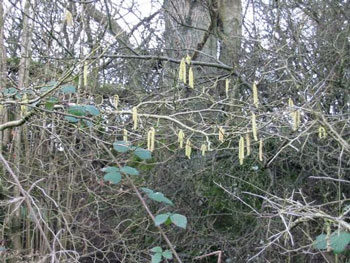
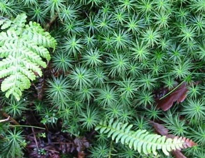

The Countryside in February


Hazel, Catkins and Bramble Leaves
The earth continues her awakening, along with the longer days and slightly higher temperatures. It is wet - and streams swollen by the extra water have scoured the riverbanks and enlarged the waterfalls, sweeping away dry dead grasses and reeds to make way for the new growth which is already showing. Nature's 'tidy up' is carried out further, as strong winds break off dead twigs and branches, and the ground beneath the trees is littered with such prunings. In some case whole trees fall victim if they are diseased or ageing, and they fall - making way for the next part of the cycle - that of once more becoming food for other plants through the action of fungi and insects. In a surprisingly short time a tree can be reduced to a soft pulp once a colony of vigorous fungi take hold. Some not-so-recently fallen trunks are colonised by mosses, and it is at this time of year when the mosses really come into their own, shining damp and green along branches and on the forest floor, easily seen now that the fallen leaves have begun to shrivel and darken.

Left: Buckler Fern
Centre: Polytrichum commune
Bottom Right: Hard Fern
It is at this time of the year when one can easily see the so-called 'witches' nests' in silver birch trees, points of abnormal growth resulting in a mass of tiny twiglets being formed into a ball shape.
All is not as grey brown as at first appears - true - the deciduous trees are still bare, but the holly trees still look splendid with their clean, shiny leaves, and the conifers contrast with their grey-green narrow needles. There are new falls of cones on the ground, as they are pushed from the trees by the new growth, or blown off by the wind - a feast for the squirrels and other hungry creatures.
Under the trees, the grass can be very lush and green, especially where leaves have not settled and it is sheltered; peer a little more closely and beneath the dead leaves are the green trefoil like leaves of the wood sorrel.
Masses of snowdrops can now be seen, naturalised in woodland and gardens alike, and each sunny day reveals more and more crocuses and aconites. Even the miniature daffodils are starting to flower, and the primroses have made their welcome entrance in sheltered places.
The alder catkins are starting to lengthen and the hazel catkins have begun to produce pollen, though not yet in vast quantities. Last year's new growth on the brambles is still green - a useful food item for the deer and other herbivores, and the ferns have not yet lost all their green 'branches'.
Amazingly, the new green leaves on the honeysuckle are well advanced; they seem unaffected by frosts, and the elder seems to have had new leaves for ages!! All in all, February has a lot of greenery!!
The rowan tree buds are now quite swollen, as are some fruit trees, notably the domestic pear, though the apple has more sense and is waiting until the weather can be more certain. Though what is 'certain'? No two Februaries are the same, and every one can turn cold and snowy quite suddenly, nipping new leaves and buds and setting back the growth.
Blue tits and blackbirds are making their first forays, looking for possible nest sites, and the seabirds are beginning to return from their winters at sea, to settle the cliffs (and some rooftops!) once again. Down in the forest in the secluded pools, huge numbers of frogs have gathered to mate, and the air is filled with their croakings, whilst their heads pop up at intervals out of the water. Already there is frogspawn on the surface of the water, and a tiny newt was seen sunning himself on a stone just an inch below the water surface.
There is a lot going on this month!!